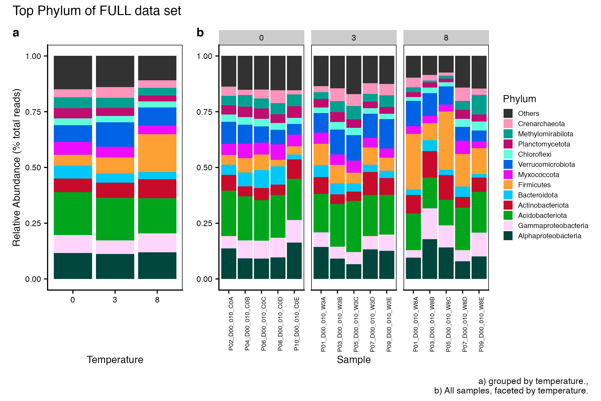
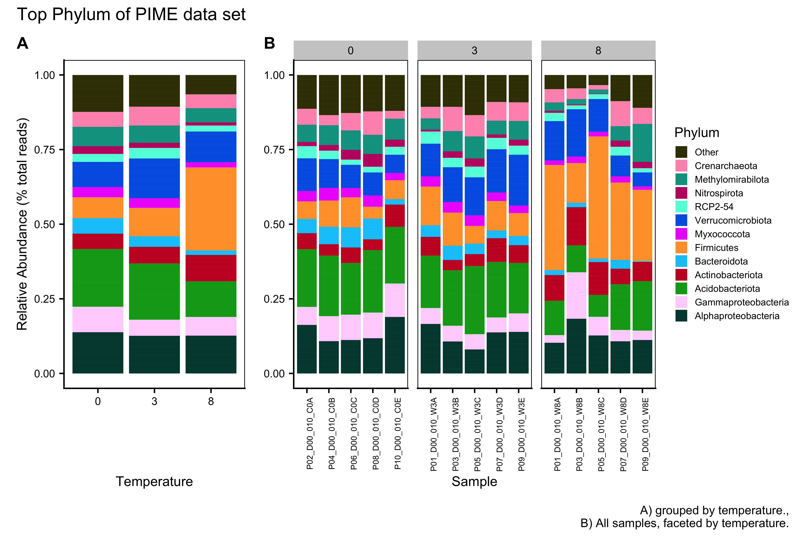
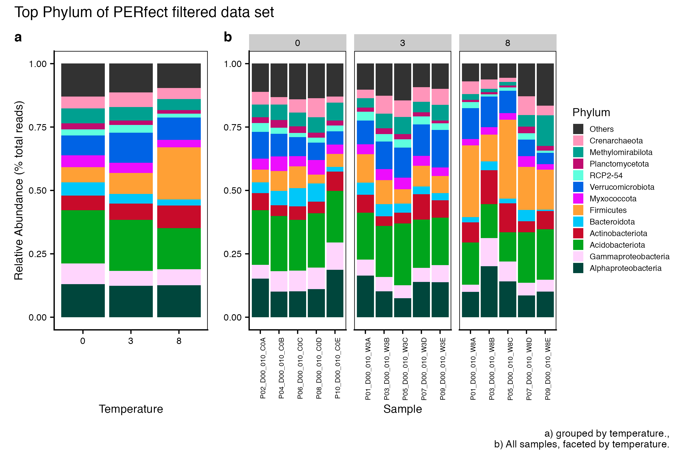
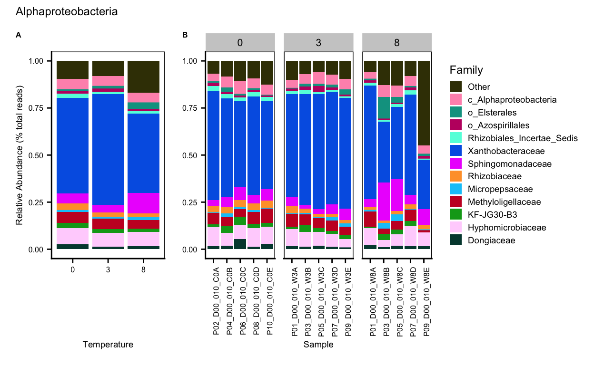
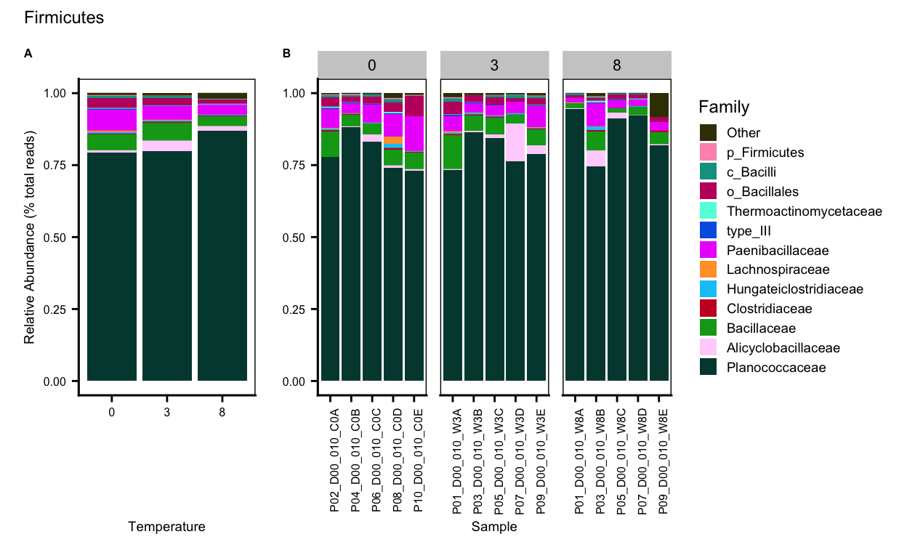
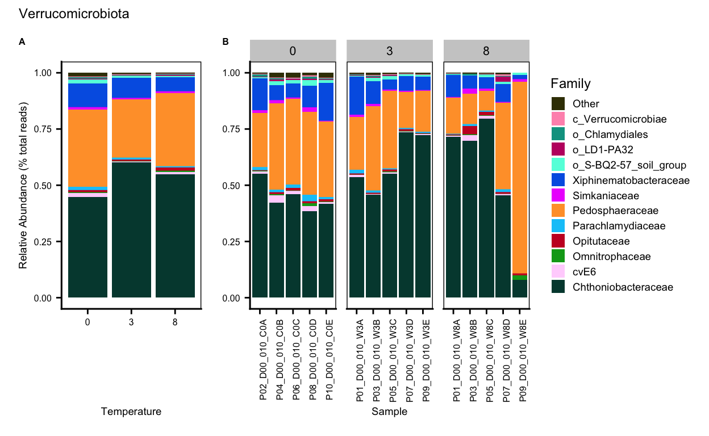
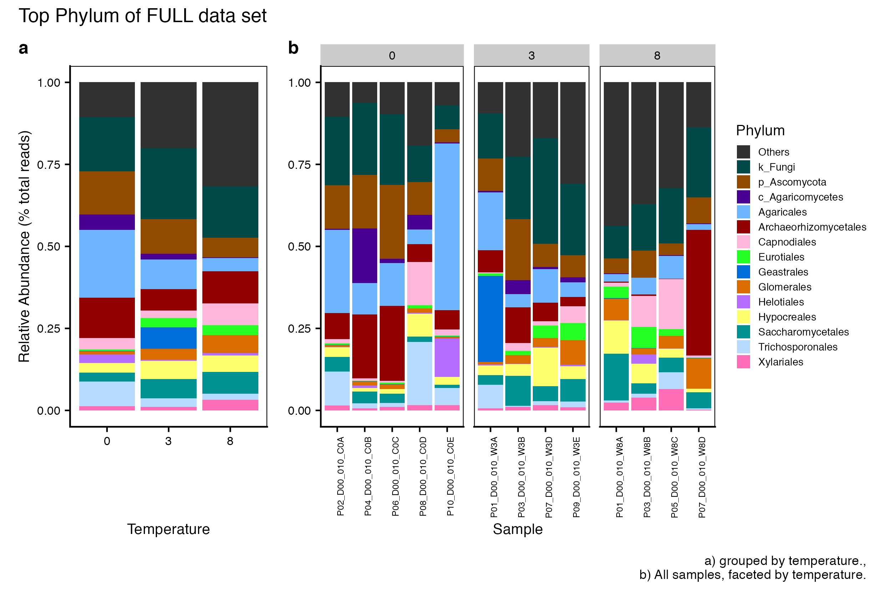
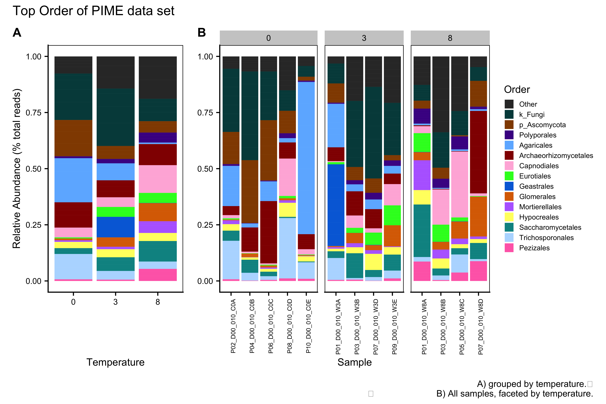
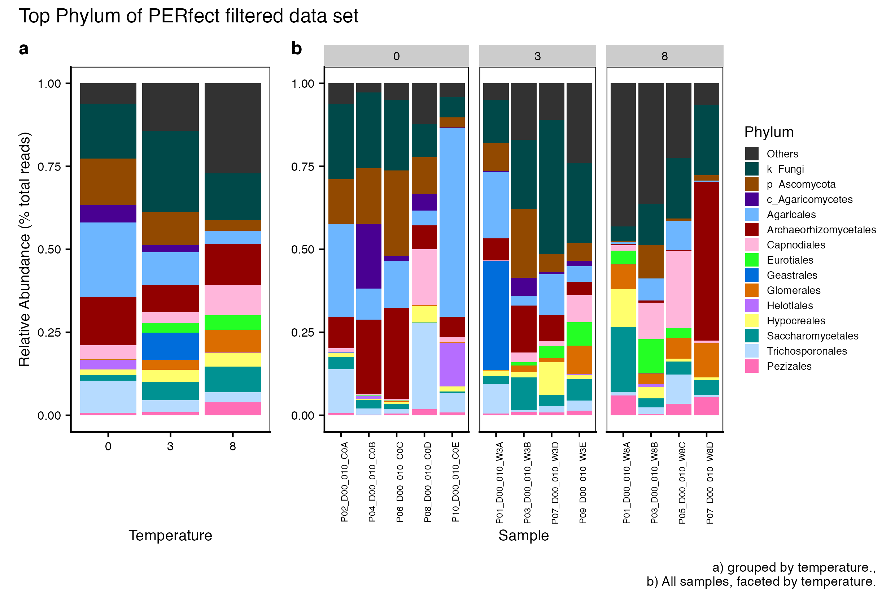

Reproducible workflow for … In this workflow, ….
knitr::opts_chunk$set(echo = TRUE, eval = FALSE)
set.seed(119)
#library(conflicted)
#pacman::p_depends(phangorn, local = TRUE)
#pacman::p_depends_reverse(phangorn, local = TRUE)
library(phyloseq); packageVersion("phyloseq")[1] '1.34.0'library(Biostrings); packageVersion("Biostrings")[1] '2.58.0'pacman::p_load(tidyverse, metacoder, hilldiv, patchwork, ampvis2,
agricolae, labdsv, naniar, codefolder, pairwiseAdonis,
microbiome, seqRFLP, DT,
install = FALSE, update = FALSE)
options(scipen=999)
knitr::opts_current$get(c(
"cache",
"cache.path",
"cache.rebuild",
"dependson",
"autodep"
))$cache
[1] 0
$cache.path
[1] "taxa_cache/html5/"
$cache.rebuild
[1] FALSE
$dependson
NULL
$autodep
[1] FALSEThis workflow contains taxonomic diversity assessments for the 2018 high temperature data sets. In order to run the workflow, you either need to first run the DADA2 Workflow for 2018 High Temp samples and then the Data Preparation workflow or begin with the output files from the Data Preparation and PIME workflows. See the Data Availability page for complete details.
In this workflow…
Here we compare the taxonomic breakdown of the FULL (unfiltered), PIME filtered, and PERfect filtered data sets, split by temperature treatment.
To create a bar chart by Phylum and Proteobacteria classes, we perform the following steps:
ssu18_data_sets <- c("ssu18_ps_pime", "ssu18_ps_pime_otu",
"ssu18_ps_work", "ssu18_ps_work_otu",
"ssu18_ps_perfect", "ssu18_ps_perfect_otu")
for (i in ssu18_data_sets) {
tmp_name <- purrr::map_chr(i, ~paste0(., "_proteo"))
tmp_get <- get(i)
tmp_df <- subset_taxa(tmp_get, Phylum == "Proteobacteria")
assign(tmp_name, tmp_df)
print(tmp_name)
tmp_get_taxa <- get_taxa_unique(tmp_df,
taxonomic.rank = rank_names(tmp_df)[3],
errorIfNULL=TRUE)
print(tmp_get_taxa)
rm(list = ls(pattern = "tmp_"))
rm(list = ls(pattern = "_proteo"))
}for (j in ssu18_data_sets) {
tmp_name <- purrr::map_chr(j, ~paste0(., "_proteo_clean"))
tmp_get <- get(j)
tmp_clean <- data.frame(tax_table(tmp_get))
for (i in 1:nrow(tmp_clean)){
if (tmp_clean[i,2] == "Proteobacteria" & tmp_clean[i,3] == "Alphaproteobacteria"){
phylum <- base::paste("Alphaproteobacteria")
tmp_clean[i, 2] <- phylum
} else if (tmp_clean[i,2] == "Proteobacteria" & tmp_clean[i,3] == "Gammaproteobacteria"){
phylum <- base::paste("Gammaproteobacteria")
tmp_clean[i, 2] <- phylum
} else if (tmp_clean[i,2] == "Proteobacteria" & tmp_clean[i,3] == "Zetaproteobacteria"){
phylum <- base::paste("Zetaproteobacteria")
tmp_clean[i, 2] <- phylum
} else if (tmp_clean[i,2] == "Proteobacteria" & tmp_clean[i,3] == "p_Proteobacteria"){
phylum <- base::paste("p_Proteobacteria")
tmp_clean[i, 2] <- phylum
}
}
tax_table(tmp_get) <- as.matrix(tmp_clean)
rank_names(tmp_get)
assign(tmp_name, tmp_get)
print(c(tmp_name, tmp_get))
print(length(get_taxa_unique(tmp_get,
taxonomic.rank = rank_names(tmp_get)[2],
errorIfNULL=TRUE)))
tmp_path <- file.path("files/taxa/rdata/")
saveRDS(tmp_get, paste(tmp_path, j, "_clean.rds", sep = ""))
rm(list = ls(pattern = "tmp_"))
}
rm(class, order, phylum)
objects(pattern="_proteo_clean")top_hits <- 12
top_level <- "Phylum"for (i in ssu18_data_sets){
tmp_get <- get(i)
tmp_otu <- data.frame(t(otu_table(tmp_get)))
tmp_otu[] <- lapply(tmp_otu, as.numeric)
tmp_otu <- as.matrix(tmp_otu)
tmp_clean_name <- purrr::map_chr(i, ~ paste0(., "_proteo_clean"))
tmp_get_clean <- get(tmp_clean_name)
tmp_tax <- as.matrix(data.frame(tax_table(tmp_get_clean)))
tmp_samples <- data.frame(sample_data(tmp_get_clean))
tmp_clean_name <- purrr::map_chr(i, ~paste0(., "_clean_", top_level))
tmp_clean_df <- merge_phyloseq(otu_table(tmp_otu, taxa_are_rows = TRUE),
tax_table(tmp_tax, tmp_tax),
sample_data(tmp_samples))
assign(tmp_clean_name, tmp_clean_df)
tmp_agg_name <- purrr::map_chr(i, ~paste0(., "_clean_", top_level, "_agg"))
tmp_agg_df <- microbiome::aggregate_top_taxa(tmp_clean_df,
top = top_hits,
level = top_level)
assign(tmp_agg_name, tmp_agg_df)
rm(list = ls(pattern = "tmp_"))
}
objects(pattern = "_agg")for (i in objects(pattern="_agg$")) {
tmp_name <- purrr::map_chr(i, ~ paste0(., "_order"))
tmp_get <- get(i)
tmp_list <- get_taxa_unique(tmp_get, taxonomic.rank = rank_names(tmp_get)[2],
errorIfNULL = TRUE)
assign(tmp_name, tmp_list)
rm(list = ls(pattern = "tmp_"))
}
objects(pattern="_order")Next, we need to set the order of the taxa to display in the plots. This must be done manually, probably.
ssu18_ps_work_clean_Phylum_agg_order <- c("Alphaproteobacteria", "Gammaproteobacteria", "Acidobacteriota", "Actinobacteriota", "Bacteroidota", "Firmicutes", "Myxococcota", "Verrucomicrobiota", "Chloroflexi", "Planctomycetota", "Methylomirabilota", "Crenarchaeota", "Other")
ssu18_ps_pime_clean_Phylum_agg_order <- c("Alphaproteobacteria", "Gammaproteobacteria", "Acidobacteriota", "Actinobacteriota", "Bacteroidota", "Firmicutes", "Myxococcota", "Verrucomicrobiota", "RCP2-54", "Nitrospirota", "Methylomirabilota", "Crenarchaeota", "Other")
ssu18_ps_perfect_clean_Phylum_agg_order <- c("Alphaproteobacteria", "Gammaproteobacteria", "Acidobacteriota", "Actinobacteriota", "Bacteroidota", "Firmicutes", "Myxococcota", "Verrucomicrobiota", "RCP2-54", "Planctomycetota", "Methylomirabilota", "Crenarchaeota", "Other")for (i in objects(pattern="_agg$")) {
tmp_name <- purrr::map_chr(i, ~paste0(., "_tax"))
tmp_agg <- purrr::map_chr(i, ~paste0(., "_order"))
tmp_get <- get(i)
tmp_get_agg <- get(tmp_agg)
tmp_df <- tmp_get %>%
transform_sample_counts(function(x) {x/sum(x)} ) %>%
psmelt()
tmp_df[[top_level]] <- gdata::reorder.factor(tmp_df[[top_level]],
new.order = rev(tmp_get_agg))
tmp_df <- tmp_df %>% dplyr::arrange(get(top_level))
assign(tmp_name, tmp_df)
print(c(i, tmp_name, tmp_agg))
rm(list = ls(pattern = "tmp_"))
}
objects(pattern = "_tax")for (i in objects(pattern="_tax")) {
tmp_get <- get(i)
tmp_levels <- levels(tmp_get[[top_level]])
print(c(i, tmp_levels))
}# SOME COLOR PALETTES
fifteen <- c("#68023F", "#008169", "#EF0096", "#00DCB5", "#FFCFE2", "#003C86", "#9400E6", "#009FFA", "#FF71FD", "#7CFFFA", "#6A0213", "#008607", "#F60239", "#00E307", "#FFDC3D")
fifteen_alt <- c("#00463C", "#C00B6F", "#00A090", "#FF95BA", "#5FFFDE", "#590A87", "#0063E5", "#ED0DFD", "#00C7F9", "#FFD5FD", "#3D3C04", "#C80B2A", "#00A51C", "#FFA035", "#9BFF2D")
twelve_alt <- c("#006A5E", "#ED0D88", "#00BDA9", "#FFC4D4", "#0058CC", "#D208FB", "#FF66FD", "#00EFF9", "#156D03", "#009719", "#00C61B", "#00FB1D")
twelve <- c("#9F0162", "#009F81", "#FF5AAF", "#00FCCF", "#8400CD", "#008DF9", "#00C2F9", "#FFB2FD", "#A40122", "#E20134", "#FF6E3A", "#FFC33B")#Select data set
set_to_plot <- "ssu18_ps_work"
set_type <- "FULL" # FULL PIME or PERFECTrm(i)
for (i in set_to_plot) {
tmp_plot_name <- purrr::map_chr(i, ~paste0(., "_", top_level, "_plot"))
tmp_get <- get(purrr::map_chr(i, ~paste0(., "_clean_Phylum_agg_tax")))
tmp_plot <- ggplot(tmp_get,
aes(x = factor(TEMP),
y = Abundance, fill = get(top_level))) +
geom_bar(stat = "identity", position = "fill") +
scale_fill_manual(values = ssu18_colvec.tax) +
#scale_x_discrete("Temperature", expand = waiver(), position = "bottom", drop = FALSE) +
theme_cowplot() +
guides(fill = guide_legend(title = top_level)) +
#guides(fill = guide_legend(reverse = FALSE, keywidth = 1, keyheight = 1)) +
ylab("Relative Abundance (% total reads)") + xlab("Temperature") +
theme(panel.grid.major = element_blank(), panel.grid.minor = element_blank(),
panel.background = element_rect(fill = "transparent", colour = NA),
plot.background = element_rect(fill = "transparent", colour = NA),
panel.border = element_rect(fill = NA, color = "black"),
legend.position = "none",
axis.text = element_text(size = 8),
axis.title = element_text(size = 10))
assign(tmp_plot_name, tmp_plot)
rm(list = ls(pattern = "tmp_"))
}
rm(i)set_to_plot variable. This code will also facet the plots by a metadata variable. If you do not want to facet remove the line beginning with facet_grid.for (i in set_to_plot) {
tmp_level_get <- get(i)
tmp_level <- data.frame(sample_data(tmp_level_get))
tmp_level <- tmp_level[order(tmp_level$TEMP), ]
tmp_level <- as.vector(tmp_level$SamName)
tmp_agg_name <- purrr::map_chr(i, ~paste0(., "_clean_", top_level, "_agg_tax"))
tmp_get <- get(tmp_agg_name)
tmp_df <- reshape::melt(tmp_get, id.vars = c("Sample", "TEMP", "Abundance", top_level))
tmp_plot_name <- purrr::map_chr(i, ~paste0(., "_", top_level, "_melt_plot"))
tmp_plot <- ggplot(tmp_df,
aes(x = Sample,
y = Abundance, fill = get(top_level))) +
facet_grid(. ~TEMP, scale = "free_x", space = "free_x")+
geom_bar(stat = "identity", position = "fill") +
scale_fill_manual(values = ssu18_colvec.tax) +
#scale_x_discrete("Treatment", expand = waiver(),
# position = "bottom", drop = FALSE, limits = tmp_level) +
theme_cowplot() +
guides(fill = guide_legend(title = top_level, reverse = FALSE,
keywidth = 0.7, keyheight = 0.7)) +
ylab(NULL) +
theme(panel.grid.major = element_blank(), panel.grid.minor = element_blank(),
panel.background = element_rect(fill = "transparent", colour = NA),
plot.background = element_rect(fill = "transparent", colour = NA),
panel.border = element_rect(fill = NA, color = "black"),
legend.text = element_text(size = 7),
legend.title = element_text(size = 10),
legend.position = "right",
#legend.key.size = unit(1.5, "cm"),
axis.text.y = element_text(size = 8),
axis.text.x = element_text(size = 6, angle = 90),
strip.text = element_text(size = 8, angle = 0),
axis.title = element_text(size = 10)) + ylab(NULL)
assign(tmp_plot_name, tmp_plot)
rm(list = ls(pattern = "tmp_"))
}
rm(i)patchwork package to combine the two plots and customize the look.for (i in set_to_plot) {
tmp_plot_final_name <- purrr::map_chr(i, ~paste0(., "_", top_level, "_plot_final"))
tmp_p_plot <- get(purrr::map_chr(i, ~paste0(., "_", top_level, "_plot")))
tmp_m_plot <- get(purrr::map_chr(i, ~paste0(., "_", top_level, "_melt_plot")))
tmp_plot_final <- tmp_p_plot + tmp_m_plot
tmp_plot_final <- tmp_plot_final +
plot_annotation(tag_levels = "A",
title = paste("Top", top_level, "of", set_type, "data set"),
#subtitle = 'Top taxa of non-filtered data',
caption = "A) grouped by temperature.,
B) All samples, faceted by temperature.") +
plot_layout(widths = c(1, 2)) &
theme(plot.title = element_text(size = 13),
plot.subtitle = element_text(size = 10),
plot.tag = element_text(size = 12),
axis.title = element_text(size = 10),
axis.text = element_text(size = 8))
#legend.position = "right")
#legend.position = "right",
#legend.title = element_text(size = rel(1)),
#legend.text = element_text(size = rel(1)))
assign(tmp_plot_final_name, tmp_plot_final)
rm(list = ls(pattern = "tmp_"))
}
rm(i)It is important to note that while most of the dominant taxa are the same across the FULL, PIME, and PERfect data sets, there a few key difference:
Planctomycetota was not among the dominant taxa in the PIME data set. Nitrospirota was substituted.
Chloroflexi was not among the dominant taxa in either the PIME or PERfect data sets. RCP2-54 was substituted in both cases.



We can also look at the relative abundance of groups within dominant Phyla. Please note these analyses are for the FULL data set only, before any type of filtering.
ssu18_data_sets listset_to_plot <- "ssu18_ps_work"
tax_group <- c("Alphaproteobacteria", "Gammaproteobacteria", "Acidobacteriota",
"Actinobacteriota", "Bacteroidota", "Firmicutes",
"Myxococcota", "Verrucomicrobiota")
for (i in set_to_plot) {
for (j in tax_group) {
tmp_get <- get(purrr::map_chr(i, ~ paste0(., "_proteo_clean")))
tmp_sub <- subset_taxa(tmp_get, Phylum == j)
tmp_name <- purrr::map_chr(i, ~ paste0(., "_", j))
assign(tmp_name, tmp_sub)
rm(list = ls(pattern = "tmp_"))
}
}
objects()for (i in tax_group) {
tmp_get <- get(purrr::map_chr(i, ~ paste0(set_to_plot, "_", i)))
tmp_list <- get_taxa_unique(tmp_get, taxonomic.rank = rank_names(tmp_get)[5], errorIfNULL = TRUE)
cat("\n")
cat("####################################################", "\n")
tmp_print <- c("Unique taxa:", i)
cat(tmp_print, "\n")
cat("####################################################")
cat("\n")
print(tmp_list)
rm(list = ls(pattern = "tmp_"))
}top_hits <- 12
top_level <- "Family"
for (i in tax_group){
tmp_get <- get(purrr::map_chr(i, ~ paste0(set_to_plot, "_", i)))
tmp_otu <- data.frame(t(otu_table(tmp_get)))
tmp_otu[] <- lapply(tmp_otu, as.numeric)
tmp_otu <- as.matrix(tmp_otu)
tmp_tax <- as.matrix(data.frame(tax_table(tmp_get)))
tmp_samples <- data.frame(sample_data(tmp_get))
tmp_clean_df <- merge_phyloseq(otu_table(tmp_otu, taxa_are_rows = TRUE),
tax_table(tmp_tax),
sample_data(tmp_samples))
tmp_agg_df <- microbiome::aggregate_top_taxa(tmp_clean_df,
top = top_hits,
level = top_level)
tmp_agg_name <- purrr::map_chr(i, ~ paste0(set_to_plot, "_", i, "_agg"))
assign(tmp_agg_name, tmp_agg_df)
rm(list = ls(pattern = "_sep_agg"))
}
objects(pattern = "_agg$")
objects()for (i in tax_group){
tmp_data <- purrr::map_chr(i, ~ paste0(set_to_plot, "_", i, "_agg"))
tmp_get <- get(tmp_data)
tmp_list <- get_taxa_unique(tmp_get, taxonomic.rank = rank_names(tmp_get)[2],
errorIfNULL = TRUE)
tmp_name <- purrr::map_chr(tmp_data, ~ paste0(., "_order"))
assign(tmp_name, tmp_list)
rm(list = ls(pattern = "tmp_"))
}
objects(pattern = "_agg_order$")for (i in tax_group) {
tmp_get <- get(purrr::map_chr(i, ~ paste0(set_to_plot, "_", i, "_agg_order")))
cat("\n")
cat("#########", i, "########", "\n")
tmp_print <- c(tmp_get)
cat(tmp_print, "\n")
cat("####################################################")
cat("\n")
rm(list = ls(pattern = "tmp_"))
}
rm(i, j)tmp_order <- rev(c("Other", "c_Alphaproteobacteria", "o_Elsterales", "o_Azospirillales", "Rhizobiales_Incertae_Sedis", "Xanthobacteraceae", "Sphingomonadaceae", "Rhizobiaceae", "Micropepsaceae", "Methyloligellaceae", "KF-JG30-B3", "Hyphomicrobiaceae", "Dongiaceae"))
assign(paste(set_to_plot, "_", "Alphaproteobacteria", "_agg_order", sep = ""), tmp_order)
###################
tmp_order <- rev(c("Other", "c_Gammaproteobacteria", "o_PLTA13", "o_CCD24", "Unknown_Family", "Xanthomonadaceae", "TRA3-20", "Steroidobacteraceae", "SC-I-84", "Nitrosomonadaceae", "Comamonadaceae", "Burkholderiaceae", "B1-7BS"))
assign(paste(set_to_plot, "_", "Gammaproteobacteria", "_agg_order", sep = ""), tmp_order)
###################
tmp_order <- rev(c("Other", "c_Subgroup_22", "c_Subgroup_25", "c_Subgroup_5", "o_Vicinamibacterales", "o_11-24", "o_Subgroup_17", "o_Subgroup_2", "o_Subgroup_7", "o_Acidobacteriales", "Vicinamibacteraceae", "Solibacteraceae", "Pyrinomonadaceae"))
assign(paste(set_to_plot, "_", "Acidobacteriota", "_agg_order", sep = ""), tmp_order)
###################
tmp_order <- rev(c("Other", "c_MB-A2-108", "o_IMCC26256", "o_Gaiellales", "o_Frankiales", "Streptomycetaceae", "Solirubrobacteraceae", "Nocardioidaceae", "Mycobacteriaceae", "Micromonosporaceae", "Gaiellaceae", "Acidothermaceae", "67-14"))
assign(paste(set_to_plot, "_", "Actinobacteriota", "_agg_order", sep = ""), tmp_order)
###################
tmp_order <- rev(c("Other", "c_SJA-28", "o_Chitinophagales", "Sphingobacteriaceae", "Saprospiraceae", "Microscillaceae", "Hymenobacteraceae", "Flavobacteriaceae", "Cytophagaceae", "Chitinophagaceae", "BSV26", "env.OPS_17", "AKYH767"))
assign(paste(set_to_plot, "_", "Bacteroidota", "_agg_order", sep = ""), tmp_order)
###################
tmp_order <- rev(c("Other", "p_Firmicutes", "c_Bacilli", "o_Bacillales", "Thermoactinomycetaceae", "type_III", "Paenibacillaceae", "Lachnospiraceae", "Hungateiclostridiaceae", "Clostridiaceae", "Bacillaceae", "Alicyclobacillaceae", "Planococcaceae"))
assign(paste(set_to_plot, "_", "Firmicutes", "_agg_order", sep = ""), tmp_order)
###################
tmp_order <- rev(c("Other", "p_Myxococcota", "c_bacteriap25", "c_Polyangia", "o_mle1-27", "o_MSB-4B10", "Sandaracinaceae", "Polyangiaceae", "Phaselicystidaceae", "Myxococcaceae", "Haliangiaceae", "BIrii41", "Anaeromyxobacteraceae"))
assign(paste(set_to_plot, "_", "Myxococcota", "_agg_order", sep = ""), tmp_order)
###################
tmp_order <- rev(c("Other", "c_Verrucomicrobiae", "o_Chlamydiales", "o_LD1-PA32", "o_S-BQ2-57_soil_group", "Xiphinematobacteraceae", "Simkaniaceae", "Pedosphaeraceae", "Parachlamydiaceae", "Opitutaceae", "Omnitrophaceae", "cvE6", "Chthoniobacteraceae"))
assign(paste(set_to_plot, "_", "Verrucomicrobiota", "_agg_order", sep = ""), tmp_order)
###################[1] “c_Alphaproteobacteria” “Dongiaceae” “Hyphomicrobiaceae” “KF-JG30-B3”
[5] “Methyloligellaceae” “Micropepsaceae” “o_Azospirillales” “o_Elsterales”
[9] “Other” “Rhizobiaceae” “Rhizobiales_Incertae_Sedis” “Sphingomonadaceae”
[13] “Xanthobacteraceae”
for (i in tax_group) {
tmp_agg <- purrr::map_chr(i, ~ paste0(set_to_plot, "_", i, "_agg"))
tmp_order <- purrr::map_chr(tmp_agg, ~paste0(., "_order"))
tmp_get_agg <- get(tmp_agg)
tmp_get_order <- get(tmp_order)
tmp_df <- tmp_get_agg %>%
transform_sample_counts(function(x) {x/sum(x)} ) %>%
psmelt()
tmp_df[[top_level]] <- gdata::reorder.factor(tmp_df[[top_level]],
new.order = rev(tmp_get_order))
tmp_df <- tmp_df %>% dplyr::arrange(get(top_level))
tmp_name <- purrr::map_chr(tmp_agg, ~paste0(., "_tax"))
assign(tmp_name, tmp_df)
#print(c(i, tmp_name, tmp_agg))
rm(list = ls(pattern = "tmp_"))
}
objects(pattern="_tax")for (i in tax_group) {
tmp_get <- get(purrr::map_chr(i, ~ paste0(set_to_plot, "_", i, "_agg_tax")))
tmp_levels <- levels(tmp_get[[top_level]])
print(c(i, tmp_levels))
}for (i in tax_group) {
tmp_get <- get(purrr::map_chr(i, ~ paste0(set_to_plot, "_", i, "_agg_tax")))
tmp_plot <- ggplot(tmp_get, aes(x = factor(TEMP),
y = Abundance, fill = get(top_level))) +
geom_bar(stat = "identity", position = "fill") +
scale_fill_manual(values = ssu18_colvec.tax) +
#scale_x_discrete("Temperature", expand = waiver(), position = "bottom", drop = FALSE) +
theme_cowplot() +
guides(fill = guide_legend(title = top_level)) +
#guides(fill = guide_legend(reverse = FALSE, keywidth = 1, keyheight = 1)) +
ylab("Relative Abundance (% total reads)") + xlab("Temperature") +
theme(panel.grid.major = element_blank(), panel.grid.minor = element_blank(),
panel.background = element_rect(fill = "transparent", colour = NA),
plot.background = element_rect(fill = "transparent", colour = NA),
panel.border = element_rect(fill = NA, color = "black"),
#axis.text = element_text(size = 6),
#axis.title = element_text(size = 8),
legend.position = "none")
tmp_name <- purrr::map_chr(i, ~paste0(set_to_plot, "_", ., "_plot"))
assign(tmp_name, tmp_plot)
rm(list = ls(pattern = "tmp_"))
}ssu18_split_df variable. This code will also facet the plots by a metadata variable. If you do not want to facet remove the line beginning with facet_grid.for (i in tax_group) {
tmp_level_get <- get(purrr::map_chr(i, ~paste0(set_to_plot, "_", .)))
tmp_level <- data.frame(sample_data(tmp_level_get))
tmp_level <- tmp_level[order(tmp_level$TEMP), ]
tmp_level <- as.vector(tmp_level$SamName)
tmp_agg_name <- purrr::map_chr(i, ~paste0(set_to_plot, "_", ., "_agg_tax"))
tmp_get <- get(tmp_agg_name)
tmp_df <- reshape::melt(tmp_get, id.vars = c("Sample", "TEMP", "Abundance", "Family"))
tmp_plot_name <- purrr::map_chr(i, ~paste0(set_to_plot, "_", ., "_plot_melt"))
tmp_plot <- ggplot(tmp_df,
aes(x = Sample,
y = Abundance, fill = get(top_level))) +
facet_grid(. ~TEMP, scale = "free_x", space = "free_x")+
geom_bar(stat = "identity", position = "fill") +
scale_fill_manual(values = ssu18_colvec.tax) +
#scale_x_discrete("Treatment", expand = waiver(),
# position = "bottom", drop = FALSE, limits = tmp_level) +
theme_cowplot() +
guides(fill = guide_legend(title = top_level, reverse = FALSE,
keywidth = 0.7, keyheight = 0.7)) +
ylab(NULL) +
theme(panel.grid.major = element_blank(), panel.grid.minor = element_blank(),
panel.background = element_rect(fill = "transparent", colour = NA),
plot.background = element_rect(fill = "transparent", colour = NA),
panel.border = element_rect(fill = NA, color = "black"),
legend.position = "right",
#legend.text = element_text(size = 6),
#legend.title = element_text(size = 8),
#legend.key.size = unit(1.5, "cm"),
#axis.text.y = element_text(size = 6),
axis.text.x = element_text(angle = 90)
#strip.text = element_text(size = 8, angle = 0),
#axis.title = element_text(size = 8)
) +
ylab(NULL)
assign(tmp_plot_name, tmp_plot)
rm(list = ls(pattern = "tmp_"))
}
objects()patchwork package to combine the two plots and customize the look.for (i in tax_group) {
tmp_plot_main <- get(purrr::map_chr(i, ~paste0(set_to_plot, "_", ., "_plot")))
tmp_plot_melt <- get(purrr::map_chr(i, ~paste0(set_to_plot, "_", ., "_plot_melt")))
tmp_final <- tmp_plot_main + tmp_plot_melt
tmp_final <- tmp_final +
plot_annotation(tag_levels = 'A',
title = i) +
#subtitle = 'Top taxa of non-filtered data',
#caption = 'A) grouped by temperature.,
#B) All samples, faceted by temperature.') +
plot_layout(widths = c(1, 2)) &
theme(plot.title = element_text(size = 9),
plot.subtitle = element_text(size = 1),
plot.tag = element_text(size = 6),
axis.title = element_text(size = 7),
axis.text = element_text(size = 6),
strip.text = element_text(size = 8, angle = 0),
legend.text = element_text(size = 7),
legend.title = element_text(size = 9)
)
#legend.position = "right")
#legend.position = "right",
#legend.title = element_text(size = rel(1)),
#legend.text = element_text(size = rel(1)))
tmp_name <- purrr::map_chr(i, ~paste0(set_to_plot, "_", ., "_final_plot"))
assign(tmp_name, tmp_final)
rm(list = ls(pattern = "tmp_"))
}save.image("page_build/taxa_ssu18_wf_part_2.rdata")


Here we compare the taxonomic breakdown of the FULL (unfiltered), PIME filtered, and PERfect filtered data sets, split by temperature treatment.
its18_data_sets <- c("its18_ps_pime", "its18_ps_pime_otu",
"its18_ps_work", "its18_ps_work_otu",
"its18_ps_perfect", "its18_ps_perfect_otu")top_hits <- 14
top_level <- "Order"for (i in its18_data_sets){
tmp_get <- get(i)
tmp_otu <- data.frame(t(otu_table(tmp_get)))
tmp_otu[] <- lapply(tmp_otu, as.numeric)
tmp_otu <- as.matrix(tmp_otu)
#tmp_clean_name <- purrr::map_chr(i, ~ paste0(., "_proteo_clean"))
#tmp_get_clean <- get(tmp_clean_name)
tmp_tax <- as.matrix(data.frame(tax_table(tmp_get)))
tmp_samples <- data.frame(sample_data(tmp_get))
tmp_clean_name <- purrr::map_chr(i, ~paste0(., "_clean_", top_level))
tmp_clean_df <- merge_phyloseq(otu_table(tmp_otu, taxa_are_rows = TRUE),
tax_table(tmp_tax, tmp_tax),
sample_data(tmp_samples))
assign(tmp_clean_name, tmp_clean_df)
tmp_agg_name <- purrr::map_chr(i, ~paste0(., "_clean_", top_level, "_agg"))
tmp_agg_df <- microbiome::aggregate_top_taxa(tmp_clean_df,
top = top_hits,
level = top_level)
assign(tmp_agg_name, tmp_agg_df)
rm(list = ls(pattern = "tmp_"))
}
#rm(list = ls(pattern = "_proteo_clean"))
objects()for (i in objects(pattern="_agg$")) {
tmp_name <- purrr::map_chr(i, ~ paste0(., "_order"))
tmp_get <- get(i)
tmp_list <- get_taxa_unique(tmp_get, taxonomic.rank = rank_names(tmp_get)[2],
errorIfNULL = TRUE)
assign(tmp_name, tmp_list)
rm(list = ls(pattern = "tmp_"))
}
objects(pattern="_order")Next, we need to set the order of the taxa to display in the plots. This must be done manually, probably.
its18_ps_work_clean_Order_agg_order <- rev(c(
"Other",
"k_Fungi",
"p_Ascomycota",
"c_Agaricomycetes", #NOT IN PIME USE Polyporales
"Agaricales",
"Archaeorhizomycetales",
"Capnodiales",
"Eurotiales",
"Geastrales",
"Glomerales",
"Helotiales", #NOT IN PIME USE Mortierellales
"Hypocreales",
"Saccharomycetales",
"Trichosporonales",
"Xylariales")) #NOT IN PIME OR PERFECT USE Pezizales
its18_ps_pime_clean_Order_agg_order <- rev(c(
"Other",
"k_Fungi",
"p_Ascomycota",
"Polyporales",
"Agaricales",
"Archaeorhizomycetales",
"Capnodiales",
"Eurotiales",
"Geastrales",
"Glomerales",
"Mortierellales",
"Hypocreales",
"Saccharomycetales",
"Trichosporonales",
"Pezizales")) #NOT IN PIME OR PERFECT USE Pezizales
its18_ps_perfect_clean_Order_agg_order <- rev(c(
"Other",
"k_Fungi",
"p_Ascomycota",
"c_Agaricomycetes",
"Agaricales",
"Archaeorhizomycetales",
"Capnodiales",
"Eurotiales",
"Geastrales",
"Glomerales",
"Helotiales",
"Hypocreales",
"Saccharomycetales",
"Trichosporonales",
"Pezizales")) for (i in objects(pattern="_agg$")) {
tmp_name <- purrr::map_chr(i, ~paste0(., "_tax"))
tmp_agg <- purrr::map_chr(i, ~paste0(., "_order"))
tmp_get <- get(i)
tmp_get_agg <- get(tmp_agg)
tmp_df <- tmp_get %>%
transform_sample_counts(function(x) {x/sum(x)} ) %>%
psmelt()
tmp_df[[top_level]] <- gdata::reorder.factor(tmp_df[[top_level]],
new.order = rev(tmp_get_agg))
tmp_df <- tmp_df %>% dplyr::arrange(get(top_level))
assign(tmp_name, tmp_df)
print(c(i,tmp_name, tmp_agg))
rm(list = ls(pattern = "tmp_"))
}
objects()for (i in objects(pattern="_tax")) {
tmp_get <- get(i)
tmp_levels <- levels(tmp_get[[top_level]])
print(c(i, tmp_levels))
}#Select data set
set_to_plot <- "its18_ps_perfect"
set_type <- "PERFECT" # FULL PIME or PERFECTrm(i)
for (i in set_to_plot) {
tmp_plot_name <- purrr::map_chr(i, ~paste0(., "_", top_level, "_plot"))
tmp_get <- get(purrr::map_chr(i, ~paste0(., "_clean_", top_level, "_agg_tax")))
tmp_plot <- ggplot(tmp_get,
aes(x = factor(TEMP),
y = Abundance, fill = get(top_level))) +
geom_bar(stat = "identity", position = "fill") +
scale_fill_manual(values = its18_colvec.tax) +
#scale_x_discrete("Temperature", expand = waiver(), position = "bottom", drop = FALSE) +
theme_cowplot() +
guides(fill = guide_legend(title = top_level)) +
#guides(fill = guide_legend(reverse = FALSE, keywidth = 1, keyheight = 1)) +
ylab("Relative Abundance (% total reads)") + xlab("Temperature") +
theme(panel.grid.major = element_blank(), panel.grid.minor = element_blank(),
panel.background = element_rect(fill = "transparent", colour = NA),
plot.background = element_rect(fill = "transparent", colour = NA),
panel.border = element_rect(fill = NA, color = "black"),
legend.position = "none",
axis.text = element_text(size = 8),
axis.title = element_text(size = 10))
assign(tmp_plot_name, tmp_plot)
rm(list = ls(pattern = "tmp_"))
}
rm(i) its18_split_df variable. This code will also facet the plots by a metadata variable. If you do not want to facet remove the line beginning with facet_grid.for (i in set_to_plot) {
tmp_level_get <- get(i)
tmp_level <- data.frame(sample_data(tmp_level_get))
tmp_level <- tmp_level[order(tmp_level$TEMP), ]
tmp_level <- as.vector(tmp_level$SamName)
tmp_agg_name <- purrr::map_chr(i, ~paste0(., "_clean_", top_level, "_agg_tax"))
tmp_get <- get(tmp_agg_name)
tmp_df <- reshape::melt(tmp_get, id.vars = c("Sample", "TEMP", "Abundance", top_level))
tmp_plot_name <- purrr::map_chr(i, ~paste0(., "_", top_level, "_melt_plot"))
tmp_plot <- ggplot(tmp_df,
aes(x = Sample,
y = Abundance, fill = get(top_level))) +
facet_grid(. ~TEMP, scale = "free_x", space = "free_x")+
geom_bar(stat = "identity", position = "fill") +
scale_fill_manual(values = its18_colvec.tax) +
#scale_x_discrete("Treatment", expand = waiver(),
# position = "bottom", drop = FALSE, limits = tmp_level) +
theme_cowplot() +
guides(fill = guide_legend(title = top_level, reverse = FALSE,
keywidth = 0.7, keyheight = 0.7)) +
ylab(NULL) +
theme(panel.grid.major = element_blank(), panel.grid.minor = element_blank(),
panel.background = element_rect(fill = "transparent", colour = NA),
plot.background = element_rect(fill = "transparent", colour = NA),
panel.border = element_rect(fill = NA, color = "black"),
legend.text = element_text(size = 7),
legend.title = element_text(size = 10),
legend.position = "right",
#legend.key.size = unit(1.5, "cm"),
axis.text.y = element_text(size = 8),
axis.text.x = element_text(size = 6, angle = 90),
strip.text = element_text(size = 8, angle = 0),
axis.title = element_text(size = 10)) + ylab(NULL)
assign(tmp_plot_name, tmp_plot)
rm(list = ls(pattern = "tmp_"))
}
rm(i) patchwork package to combine the two plots and customize the look.for (i in set_to_plot) {
tmp_plot_final_name <- purrr::map_chr(i, ~paste0(., "_", top_level, "_plot_final"))
tmp_p_plot <- get(purrr::map_chr(i, ~paste0(., "_", top_level, "_plot")))
tmp_m_plot <- get(purrr::map_chr(i, ~paste0(., "_", top_level, "_melt_plot")))
tmp_plot_final <- tmp_p_plot + tmp_m_plot
tmp_plot_final <- tmp_plot_final +
plot_annotation(tag_levels = "A",
title = paste("Top", top_level, "of", set_type, "data set"),
#subtitle = 'Top taxa of non-filtered data',
caption = "A) grouped by temperature.
B) All samples, faceted by temperature.") +
plot_layout(widths = c(1, 2)) &
theme(plot.title = element_text(size = 13),
plot.subtitle = element_text(size = 10),
plot.tag = element_text(size = 12),
axis.title = element_text(size = 10),
axis.text = element_text(size = 8))
#legend.position = "right")
#legend.position = "right",
#legend.title = element_text(size = rel(1)),
#legend.text = element_text(size = rel(1)))
assign(tmp_plot_final_name, tmp_plot_final)
rm(list = ls(pattern = "tmp_"))
}
rm(i)It is important to note that while most of the dominant taxa are the same across the FULL, PIME, and PERfect data sets, there a few key difference:
c_Agaricomycetes & Helotiales were not among the dominant taxa in the PIME data set. Polyporales & Mortierellales were substituted, respecively.
Xylariales was not among the dominant taxa in either the PIME or PERfect data sets. Pezizales was substituted in both cases.



Lineage Maps
objects()ps_work_merge <- ssu18_ps_pime
ps_water_mc_100 <- prune_taxa(taxa_sums(ps_work_merge) > 100, ps_work_merge)
total_reads_ps_water <- sum(readcount(ps_work_merge))
total_reads_ps_water_100 <- sum(readcount(ps_water_mc_100))
ps_obj <- ps_water_mc_100#summarize_phyloseq(ps_water_o)
#summarize_phyloseq(ps_water_mc)
tax_tab1 <- as.data.frame(tax_table(ps_obj))
tax_tab1 <- tibble::rownames_to_column(tax_tab1, "otu_id")
asv_tab1 <- as.data.frame(t(otu_table(ps_obj)))
asv_tab1 <- tibble::rownames_to_column(asv_tab1, "otu_id")
sam_tab1 <- data.frame(sample_data(ps_obj))
sam_tab1[1] <- NULL
da_samp <- tibble::rownames_to_column(sam_tab1, "sample_id")
water_mc <- merge(asv_tab1, tax_tab1, by="otu_id")
water_mc$ASV_SEQ <- NULLobj <- parse_tax_data(water_mc, class_cols = c("Kingdom", "Phylum",
"Class", "Order",
"Family", "Genus", "ASV_ID" ))
obj$data$tax_abund <- calc_taxon_abund(obj, "tax_data",
cols = da_samp$sample_id)
obj$data$tax_occ <- calc_n_samples(obj, "tax_abund",
groups = da_samp$REGION,
cols = da_samp$sample_id)obj$data$diff_table <- compare_groups(obj,
data = "tax_abund",
cols = da_samp$sample_id,
groups = da_samp$TREAT)Bacteria
range.default(obj$data$diff_table$log2_median_ratio, finite=TRUE)#set.seed(1999)
obj %>%
filter_taxa(taxon_names %in% c("Bacteria"), subtaxa = TRUE) %>%
# filter_taxa(taxon_ranks == "f", supertaxa = TRUE) %>% # subset to the order rank
# filter_taxa(taxon_names %in% c("Proteobacteria", "Bacteroidia", "Archaea"), subtaxa = TRUE, invert = TRUE) # to remove taxa
heat_tree(
node_label = taxon_names,
node_size = n_obs,
# node_size_range = c(0.01, 0.05),
node_label_size_range = c(0.008, 0.04),
node_color = log2_median_ratio,
node_color_interval = c(-3, 5),
edge_color_interval = c(-3, 5),
node_color_trans = "area",
node_color_range = c("#0072B2", "gray", "#D55E00"),
node_size_axis_label = "OTU count",
node_color_axis_label = "Log 2 median ratio",
layout = "da",
initial_layout = "re",
overlap_avoidance = 2,
output_file = "differential_heat_tree_merged_Bacteria.png")Archaea
arch_only <- obj %>% filter_taxa(taxon_names %in% c("Archaea"), subtaxa = TRUE)
range.default(arch_only$data$diff_table$log2_median_ratio, finite=TRUE)#set.seed(1999)
obj %>%
filter_taxa(taxon_names %in% c("Archaea"), subtaxa = TRUE) %>%
# filter_taxa(taxon_ranks == "o", supertaxa = TRUE) %>% # subset to the order rank
# filter_taxa(taxon_names %in% c("Proteobacteria", "Bacteroidia", "Archaea"), subtaxa = TRUE, invert = TRUE) # to remove taxa
heat_tree(
node_label = taxon_names,
node_size = n_obs,
# node_size_range = c(0.01, 0.05),
node_label_size_range = c(0.008, 0.04),
node_color = log2_median_ratio,
node_color_interval = c(-5, 7),
edge_color_interval = c(-5, 7),
node_color_trans = "area",
node_color_range = c("#0072B2", "gray", "#D55E00"),
node_size_axis_label = "OTU count",
node_color_axis_label = "Log 2 median ratio",
layout = "da",
initial_layout = "re",
overlap_avoidance = 2,
output_file = "files/trepo/taxa/figures/differential_heat_tree_merged_Archaea.png")Top Phyla
top_phyl <- obj %>% filter_taxa(taxon_names %in% c("Proteobacteria", "Acidobacteriota", "Chloroflexi", "Planctomycetota"), subtaxa = TRUE)
range.default(top_phyl$data$diff_table$log2_median_ratio, finite=TRUE)#set.seed(10)
obj %>%
filter_taxa(taxon_names %in% c("Proteobacteria", "Acidobacteriota", "Chloroflexi", "Planctomycetota"),
subtaxa = TRUE) %>%
heat_tree(node_label = taxon_names,
node_size = n_obs,
node_color = log2_median_ratio,
node_color_range = c("#0072B2", "gray", "#D55E00"),
node_color_interval = c(-3, 3),
#edge_color_interval = c(-5.5, 4),
#node_color_trans = "area",
tree_label = taxon_names,
initial_layout = "re", layout = "da",
node_color_axis_label = "Sum of root reads",
node_size_axis_label = "Number of OTUs",
#overlap_avoidance = 2,
output_file = "files/trepo/taxa/figures/differential_heat_tree_merged_phyla.png")set.seed(1)
obj$data$diff_table2 <- compare_groups(obj,
data = "tax_abund",
cols = da_samp$sample_id, # What columns of sample data to use
groups = da_samp$TEMP) # What category each sample is assigned to
heat_tree_matrix(obj,
data = "diff_table2",
node_size = n_obs, # n_obs is a function that calculates, in this case, the number of OTUs per taxon
node_label = taxon_names,
node_color = log2_median_ratio, # A column from `obj$data$diff_table`
node_color_range = diverging_palette(), # The built-in palette for diverging data
node_color_trans = "linear", # The default is scaled by circle area
node_color_interval = c(-3, 3), # The range of `log2_median_ratio` to display
edge_color_interval = c(-3, 3), # The range of `log2_median_ratio` to display
node_size_axis_label = "Number of OTUs",
node_color_axis_label = "Log2 ratio median proportions",
layout = "davidson-harel", # The primary layout algorithm
initial_layout = "reingold-tilford", # The layout algorithm that initializes node locations
output_file = c("differential_heat_tree2.png", "differential_heat_tree2.pdf")) # Saves the plot as a png filessu18_ps_pime <- readRDS("files/pime/rdata/ssu18_ps_pime.rds")
ps_water_mc_100 <- prune_taxa(taxa_sums(ssu18_ps_pime) > 500, ssu18_ps_pime)
total_reads_ps_water <- sum(readcount(ssu18_ps_pime))
total_reads_ps_water_100 <- sum(readcount(ps_water_mc_100))
ps_obj <- ps_water_mc_100
x <- data.frame(sample_data(ps_obj))
temp_temp <- c("W0", "W0", "W0", "W0", "W0", "W4", "W4", "W4", "W4", "W4", "W8", "W8", "W8", "W8", "W8")
x$TEMP <- temp_temp
sample_data(ps_obj) <- xload("filtered_data.Rdata")
obj %>%
filter_taxa(grepl(pattern = "^[a-zA-Z]+$", taxon_names)) %>% # remove "odd" taxa
filter_taxa(taxon_ranks == "o", supertaxa = TRUE) %>% # subset to the order rank
heat_tree(node_label = gsub(pattern = "\\[|\\]", replacement = "", taxon_names),
node_size = n_obs,
node_color = n_obs,
node_color_axis_label = "OTU count",
layout = "davidson-harel", initial_layout = "reingold-tilford")heat_tree(obj)
obj$taxon_names()
ps_obj_mc_obj$n_obs_1()
heat_tree(obj,
node_label = taxon_names,
node_size = n_obs,
node_color = roots)
obj$data$tax_abund <- calc_taxon_abund(obj, "otu_counts",
cols = sample_data$SampleID,
groups = sample_data$Type)ssu18_make_metac <- c("ps_obj")
rm(list = ls(pattern = "tmp_"))
for (i in ssu18_make_metac){
tmp_get <- get(i)
tmp_tax <- as.data.frame(tax_table(tmp_get))
tmp_tax <- tmp_tax %>% tibble::rownames_to_column("otu_id")
tmp_asv <- as.data.frame(t(otu_table(tmp_get)))
tmp_asv <- tmp_asv %>% tibble::rownames_to_column("otu_id")
tmp_sam <- data.frame(sample_data(tmp_get))
tmp_sam[1] <- NULL
tmp_sam <- tmp_sam %>% tibble::rownames_to_column("sample_id")
tmp_asv_tax <- merge(tmp_asv, tmp_tax, by="otu_id")
tmp_asv_tax$ASV_SEQ <- NULL
tmp_asv_tax$ASV_ID <- NULL
tmp_obj <- parse_tax_data(tmp_asv_tax,
class_cols = c("Kingdom", "Phylum","Class",
"Order","Family", "Genus"
))
tmp_obj$data$tax_group_abund <- calc_taxon_abund(tmp_obj, "tax_data",
cols = tmp_sam$sample_id,
groups = tmp_sam$TEMP)
tmp_obj$data$tax_total_abund <- calc_taxon_abund(tmp_obj, "tax_data",
cols = tmp_sam$sample_id,
groups = tmp_sam$DEPTH,
out_names = "n_reads")
tmp_obj$data$tax_samp_abund <- calc_taxon_abund(tmp_obj, "tax_data",
cols = tmp_sam$sample_id)
tmp_obj$data$tax_samp_occ <- calc_n_samples(tmp_obj, "tax_samp_abund",
groups = tmp_sam$TEMP,
cols = tmp_sam$sample_id)
tmp_obj$data$diff_table <- compare_groups(tmp_obj,
data = "tax_samp_abund",
cols = tmp_sam$sample_id,
groups = tmp_sam$TEMP)
tmp_name <- purrr::map_chr(i, ~paste0(., "_mc_obj"))
assign(tmp_name, tmp_obj)
tmp_name2 <- purrr::map_chr(i, ~paste0(., "_mc_samp_data"))
assign(tmp_name2, tmp_sam)
rm(list = ls(pattern = "tmp_"))
}
objects()ps_obj_mc_obj$data$tax_sam
#ps_obj_mc_obj$data$diff_table
#write.table(ps_obj_mc_obj$data$diff_table, "test.txt", quote = FALSE, sep = "\t")
#ps_obj_mc_obj$data$diff_table
#set.seed(1999)
ps_obj_mc_obj %>%
filter_taxa(taxon_names %in% c("Bacteria"), subtaxa = TRUE) %>%
# filter_taxa(taxon_ranks == "o", supertaxa = TRUE) %>% # subset to the order rank
# filter_taxa(taxon_names %in% c("Alphaproteobacteria", "Firmicutes", "Gammaproteobacteria"), subtaxa = TRUE, invert = FALSE) %>% #
heat_tree(node_label = taxon_names,
node_size = n_obs,
node_size_range = c(0.01, 0.05),
edge_size_range = c(0.005, 0.005),
node_color = W0,
initial_layout = "re", layout = "da",
title = "Root sample read depth",
node_color_axis_label = "Sum of root reads",
node_size_axis_label = "Number of OTUs",
output_file = "plot_example0.pdf")
heat_tree(
node_size = W8,
node_label = paste0(taxon_names, " (", n_obs, ")" ) ,
node_size_range = c(0.01, 0.04),
#node_label_size_range = c(0.008, 0.04),
node_color = W8,
#node_color_interval = c(0, 0.05),
#edge_color_interval = c(0, 0.05),
#node_color_trans = "area",
#node_color_range = c("#D55E00", "gray", "#0072B2"),
node_size_axis_label = "OTU count",
node_color_axis_label = "Log 2 median ratio",
layout = "da",
initial_layout = "re",
overlap_avoidance = 2,
output_file = "differential_heat_tree.pdf")swel_col <- c("#ff6db6", "#24ff24", "#db6d00")
write.table(ps_obj_mc_obj$data$diff_table, "test.txt", quote = FALSE, sep = "\t")
ps_obj_mc_obj$n_obs()
ps_obj_mc_obj %>%
filter_taxa(taxon_names %in% c("Bacteria"), subtaxa = TRUE) %>%
heat_tree_matrix(
data = "diff_table",
node_label = taxon_names,
node_size = n_obs_1, # n_obs is a function that calculates the number of OTUs per taxon
#node_label_size_range = c(0.008, 0.04),
node_color = roots, # A column from `obj$data$diff_table`
#node_color_range = swel_col, # The built-in palette for diverging data
#node_color_trans = "linear", # The default is scaled by circle area
#node_color_interval = c(0, 0.05), # The range of `log2_median_ratio` to display
#edge_color_interval = c(0, 0.05), # The range of `log2_median_ratio` to display
node_size_axis_label = "Number of OTUs",
node_color_axis_label = "Log2 ratio median proportions",
layout = "fr", # The primary layout algorithm
initial_layout = "reingold-tilford", # The layout algorithm that initializes node locations
output_file = "differential_heat_tree2.pdf") # Saves the plot as a png filefor (i in ssu18_data_sets){
tmp_clean <- purrr::map_chr(i, ~paste0(., "_proteo_clean"))
tmp_get <- get(tmp_clean)
tmp_ps <- transform_sample_counts(tmp_get, function(otu) otu/sum(otu))
tmp_ps@phy_tree <- NULL
tmp_prune <- prune_samples(sample_sums(tmp_ps) > 0, tmp_ps)
tmp_tree <- rtree(ntaxa(tmp_prune), rooted = TRUE, tip.label = taxa_names(tmp_prune))
tmp_ps_merge <- merge_phyloseq(tmp_prune,
sample_data,
tmp_tree)
tmp_name <- purrr::map_chr(i, ~paste0(., "_proteo_clean_trans"))
assign(tmp_name, tmp_ps_merge)
rm(list = ls(pattern = "tmp_"))
}
objects(pattern="_agg") ssu18_ps_pime_clean_Phylum_aggcarbom_chloro <- subset_taxa(ssu18_ps_pime_proteo_clean_trans, Phylum %in% c("Firmicutes"))
testplot <- plot_bar(carbom_chloro, x="Class", fill = "Class", facet_grid = ~TEMP) +
geom_bar(aes(color=Class, fill=Class), stat="identity", position="stack")
carbom_chloro <- subset_taxa(ssu18_ps_pime_proteo_clean_trans, Phylum %in% c("Alphaproteobacteria", "Gammaproteobacteria", "Firmicutes"))
carbom.ord <- ordinate(carbom_chloro, "NMDS", "bray")
testplot <- plot_ordination(ssu18_ps_work_proteo_clean_trans, carbom.ord, type="taxa", color="Family",
title="OTUs", label="Family") +
facet_wrap(~Phylum)
testplot
dev.off()
png("figures/taxa/ssu/testplot.png", height = 20, width = 70,
units = 'cm', res = 600, bg = "white")
testplot
dev.off()
pdf("figures/taxa/ssu/testplot.pdf", height = 10, width = 12)
testplot
dev.off()subset_level <- "Phylum"
subset_name <- "Alphaproteobacteria"
for ( i in ssu18_data_sets){
tmp_get_name <- purrr::map_chr(i, ~ paste0(., "_proteo_clean"))
tmp_get <- get(tmp_get_name)
tmp_ps <- subset_taxa(tmp_get, get(subset_level) %in% c(subset_name))
tmp_sub_name <- purrr::map_chr(i, ~paste0(., "_clean_sub_", subset_name))
assign(tmp_sub_name, tmp_ps)
rm(list = ls(pattern = "tmp_"))
}top_hits <- 12
top_level <- "Family"
for (i in ssu18_data_sets){
tmp_get_name <- purrr::map_chr(i, ~ paste0(., "_clean_sub_", subset_name))
tmp_get <- get(tmp_get_name)
tmp_otu <- data.frame(t(otu_table(tmp_get)))
tmp_otu[] <- lapply(tmp_otu, as.numeric)
tmp_otu <- as.matrix(tmp_otu)
tmp_tax <- as.matrix(data.frame(tax_table(tmp_get)))
tmp_samples <- data.frame(sample_data(tmp_get))
tmp_clean_df <- merge_phyloseq(otu_table(tmp_otu, taxa_are_rows = TRUE),
tax_table(tmp_tax, tmp_tax),
sample_data(tmp_samples))
tmp_agg_name <- purrr::map_chr(i, ~paste0(., "_clean_sub_", subset_name, "_agg"))
tmp_agg_df <- microbiome::aggregate_top_taxa(tmp_clean_df,
top = top_hits,
level = top_level)
assign(tmp_agg_name, tmp_agg_df)
rm(list = ls(pattern = "tmp_"))
}
objects(pattern="_sub")
objects()for (i in objects(pattern="_sub.*_agg$")) {
tmp_name <- purrr::map_chr(i, ~ paste0(., "_order"))
tmp_get <- get(i)
tmp_list <- get_taxa_unique(tmp_get, taxonomic.rank = rank_names(tmp_get)[1],
errorIfNULL = TRUE)
assign(tmp_name, tmp_list)
rm(list = ls(pattern = "tmp_"))
}
objects(pattern="_sub")for (i in objects(pattern="_sub.*_agg$")) {
tmp_name <- purrr::map_chr(i, ~paste0(., "_tax"))
tmp_agg <- purrr::map_chr(i, ~paste0(., "_order"))
tmp_get <- get(i)
tmp_get_agg <- get(tmp_agg)
tmp_df <- tmp_get %>%
transform_sample_counts(function(x) {x/sum(x)} ) %>%
psmelt()
tmp_df[[top_level]] <- gdata::reorder.factor(tmp_df[[top_level]],
new.order = rev(tmp_get_agg))
tmp_df <- tmp_df %>% dplyr::arrange(get(top_level))
assign(tmp_name, tmp_df)
print(c(i,tmp_name, tmp_agg))
rm(list = ls(pattern = "tmp_"))
}
objects(pattern="_tax")for (i in objects(pattern="_sub.*_tax")) {
tmp_get <- get(i)
tmp_levels <- levels(tmp_get[[top_level]])
print(c(i, tmp_levels))
}ssu18_ps_pime_0_clean_sub_Firmicutes_agg_order <- c("Bacillaceae" "o_Bacillales" "Planococcaceae" "Paenibacillaceae")
ssu18_ps_pime_4_clean_sub_Firmicutes_agg_order
ssu18_ps_pime_8_clean_sub_Firmicutes_agg_order
ssu18_ps_pime_clean_sub_Firmicutes_agg_order
ssu18_ps_work_0_clean_sub_Firmicutes_agg_order
ssu18_ps_work_4_clean_sub_Firmicutes_agg_order
ssu18_ps_work_8_clean_sub_Firmicutes_agg_order
ssu18_ps_work_clean_sub_Firmicutes_agg_orderssu18_ps_work_Alphaproteobacteria_plot <- ggplot(ssu18_ps_work_clean_sub_Alphaproteobacteria_agg_tax,
aes(x = factor(TEMP),
y = Abundance, fill = get(top_level))) +
geom_bar(stat = "identity", position = "fill") +
scale_fill_manual(values = ssu18_colvec.tax) +
#scale_x_discrete("Temperature", expand = waiver(), position = "bottom", drop = FALSE) +
theme_cowplot() +
guides(fill = guide_legend(title = top_level)) +
#guides(fill = guide_legend(reverse = FALSE, keywidth = 1, keyheight = 1)) +
ylab("Relative Abundance (% total reads)") + xlab("Temperature") +
theme(panel.grid.major = element_blank(), panel.grid.minor = element_blank(),
panel.background = element_rect(fill = "transparent", colour = NA),
plot.background = element_rect(fill = "transparent", colour = NA),
panel.border = element_rect(fill = NA, color = "black"),
legend.position = "right",
axis.text = element_text(size = 8),
axis.title = element_text(size = 10))
ssu18_ps_work_Alphaproteobacteria_plotssu18_split_df <- c("ssu18_ps_work", "ssu18_ps_pime_0", "ssu18_ps_pime_4", "ssu18_ps_pime_8")
for (i in ssu18_split_df) {
tmp_level_get <- get(i)
tmp_level <- data.frame(sample_data(tmp_level_get))
tmp_level <- tmp_level[order(tmp_level$TEMP), ]
tmp_level <- as.vector(tmp_level$SamName)
tmp_agg_name <- purrr::map_chr(i, ~paste0(., "_clean_sub_", subset_name, "_agg_tax"))
tmp_get <- get(tmp_agg_name)
tmp_df <- reshape::melt(tmp_get, id.vars = c("Sample", "TEMP", "Abundance", top_level))
tmp_plot_name <- purrr::map_chr(i, ~paste0(., "_", subset_name, "_melt_plot"))
tmp_plot <- ggplot(tmp_df,
aes(x = Sample,
y = Abundance, fill = get(top_level))) +
facet_grid(. ~TEMP, scale = "free_x", space = "free_x")+
geom_bar(stat = "identity", position = "fill") +
scale_fill_manual(values = ssu18_colvec.tax) +
#scale_x_discrete("Treatment", expand = waiver(),
# position = "bottom", drop = FALSE, limits = tmp_level) +
theme_cowplot() +
guides(fill = guide_legend(title = top_level, reverse = FALSE,
keywidth = 0.7, keyheight = 0.7)) +
ylab(NULL) +
theme(panel.grid.major = element_blank(), panel.grid.minor = element_blank(),
panel.background = element_rect(fill = "transparent", colour = NA),
plot.background = element_rect(fill = "transparent", colour = NA),
panel.border = element_rect(fill = NA, color = "black"),
legend.text = element_text(size = 7),
legend.title = element_text(size = 10),
legend.position = "right",
#legend.key.size = unit(1.5, "cm"),
axis.text.y = element_text(size = 8),
axis.text.x = element_text(size = 6, angle = 90),
strip.text = element_text(size = 8, angle = 0),
axis.title = element_text(size = 10)) + ylab(NULL)
assign(tmp_plot_name, tmp_plot)
rm(list = ls(pattern = "tmp_"))
}
objects(pattern="_plot")
ssu18_ps_work_Alphaproteobacteria_melt_plot
ssu18_ps_pime_0_Alphaproteobacteria_melt_plot
ssu18_ps_pime_4_Alphaproteobacteria_melt_plot
ssu18_ps_pime_8_Alphaproteobacteria_melt_plotssu18_ps_work_
carbom_chloro_trans <- carbom_chloro %>%
transform_sample_counts(function(x) {x/sum(x)} ) %>%
psmelt()
ssu18_Fractions_tax$Phylum <- gdata::reorder.factor(ssu18_Fractions_tax$Phylum,
new.order = ssu18_tax_order)
ssu18_Fractions_tax <- ssu18_Fractions_tax %>% dplyr::arrange(Phylum)
plot_bar(carbom_chloro_trans, x = "Family", fill = "Family", facet_grid = DEPTH~TEMP) +
geom_bar(aes(color = Family, fill = Family), stat = "identity", position = "stack")tax_tab <- as.data.frame(tax_table(ps_work)) tax_tab <- tibble::rownames_to_column(tax_tab, “asv_id”) tax_tab$ASV_SEQ <- NULL colnames(tax_tab)[colnames(tax_tab) == “ASV_ID”] <- “ASV” write.table(tax_tab, “tables/data-prep/ssu/tax_tab_mc_ssu18.txt,” quote = FALSE, sep = ", row.names = FALSE)
The source code for this page can be accessed on GitHub by clicking this link.
If you see mistakes or want to suggest changes, please create an issue on the source repository.
Text and figures are licensed under Creative Commons Attribution CC BY 4.0. Source code is available at https://github.com/sweltr/high-temp/, unless otherwise noted. The figures that have been reused from other sources don't fall under this license and can be recognized by a note in their caption: "Figure from ...".